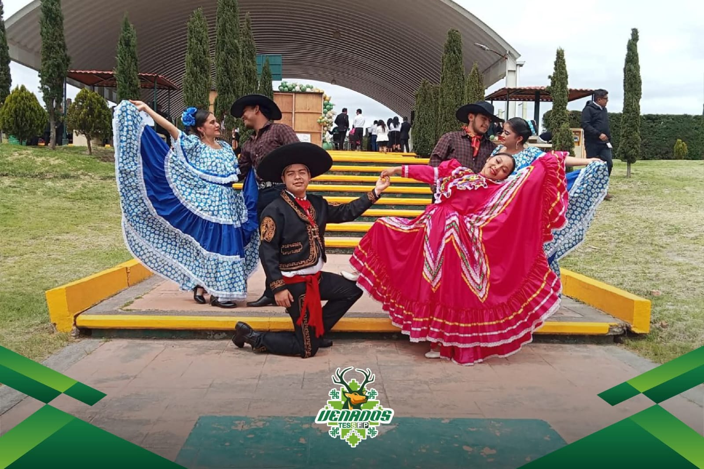

Gracias por entrar al Colegio de Estudios Cientificos y Tecnologicos del Estado de Mexico
“La educación no cambia al mundo, cambia a las personas que van a cambiar al mundo”.
Paulo Freire
Acerca del CECYTEM
Objetivo
Nuestro CECyTEM Plantel San Felipe del Progreso se compromete a formar jóvenes competentes y conscientes de su identidad cultural, preparados para enfrentar los retos del futuro y contribuir al desarrollo de su comunidad y del país.
Misión
Formar jóvenes profesionistas en el área de la tecnología, específicamente en la carrera de Técnico en Programación, a través de una educación integral y de calidad que promueva el desarrollo de competencias científicas y tecnológicas. Fomentar la identidad cultural de la región mazahua, integrando un enfoque intercultural en el proceso educativo. Comprometernos con la mejora continua y la vinculación con la comunidad, las instituciones educativas y el sector productivo, para contribuir al desarrollo social y económico de San Felipe del Progreso y del Estado de México.
Visión
Ser una institución educativa de excelencia reconocida a nivel regional y nacional, que forme profesionales competentes y comprometidos con su comunidad, capaces de enfrentar los desafíos del mundo contemporáneo. Promover un ambiente de aprendizaje inclusivo e intercultural que valore y respete la diversidad, impulsando la innovación y el uso de tecnologías avanzadas. Contribuir al desarrollo sostenible de la región mazahua y del Estado de México, formando líderes que fomenten el progreso social y económico a través de la educación y el emprendimiento.

Historia
Data en septiembre del año 2004 cuando se obtiene el registro ante la Secretaria de Educación Pública, iniciando actividades el primero de octubre del mismo año; con dos aulas prestadas por la Primaria “Niños Héroes”, ubicada en la comunidad de “La Cabecera” del municipio San Felipe del Progreso, el primer ciclo escolar 2004-2005, se conformó de 44 alumnos, distribuidos en dos grupos inscritos en la carrera de Técnico en Informática, dirigida por el Lic. José Ángel Robles Hernández.
En noviembre del año 2005, asume la dirección del plantel el Maestro en Administración Eduardo Vargas Romero, que en paz descansé; contando con una matrícula de 335 alumnos y aún en las instalaciones provisionales de las bodegas de CONASUPO, se comenzó con las gestiones para adquirir el terreno donde se construirían las instalaciones del plantel, fortaleciendo la parte académica incorporando a más personal docente y administrativo que apoyaban en las labores del plantel.
Para el ciclo escolar 2007-2008 se inicia con una matrícula de 390 alumnos y con mucho orgullo egresa la primera generación del plantel (Generación 2004-2007), conformada de 28 alumnos, 13 de ellos obteniendo el Título de Técnicos en Informática.
Durante este mismo año, se obtiene la donación del terreno que actualmente conforma nuestras instalaciones, dando inicio a su construcción a finales del 2007.
En el mes de abril de 2008 asume la dirección del plantel la Maestra Elizabeth Guadarrama Almanza, quien gestiona la luz eléctrica para el edificio “D” y el pronto cambio a las instalaciones propias del plantel, adecuando el área administrativa; cubriendo una matrícula de 333 alumnos y debido a su incremento de matrícula se apertura el turno vespertino, así mismo, cabe hacer mención que durante esta administración se gestionó la 2da etapa de la construcción del edifico “C” del plantel y gracias a su compromiso y profesionalización, el plantel adquirió la categoría de aspirante para ingresar al Sistema Nacional de Bachillerato (SNB), aunado a ello, como parte del proceso enseñanza aprendizaje
se consolidan las bases para ser el plantel pionero en el desarrollo del enfoque intercultural enfatizando con gran orgullo nuestra cultura mazahua que caracteriza la región noroeste del Estado de México.
En septiembre del año 2012, el Lic. Florentino Mendoza Baltazar, subdirector del plantel, funge como encargado del despacho de la Dirección del Plantel hasta el mes de mayo de 2013, periodo en el que se consolidan los requisitos para la integración del Plantel al Sistema Nacional de Bachillerato con Nivel IV; la matrícula estudiantil aumenta a 380 alumnos e inicia la construcción del Edificio “C”, periodo en el que se formaliza la actualización de carrera de Técnico en Informática a Técnico en Programación.
En el mes de mayo de 2013, se integra a esta institución, como Director del plantel el Mtro. Margarito García San Juan, periodo en el que se concluye la construcción del Edificio “C”, equipando las salas de cómputo e idiomas; no obstante, para el año 2017 gestionó subir el nivel de la categoría del Sistema Nacional de Bachillerato del IV a Nivel III; al año siguiente aumenta considerablemente la matrícula a 464 alumnos, siendo una de las instituciones con mayor matrícula escolar dentro del municipio, pasando de tener 11 grupos a un total de 14; se logró obtener equipos de proyección y pizarras electrónicas de ultima tecnología en siete aulas, adecuación para la construcción de la cafetería, acuerdos con las bases de taxis para el servicio de traslado seguro de la comunidad escolar; techado de pasillos y colocación del arco techo en la cancha de usos múltiples del plantel, así mismo se dio gran realce a talleres culturales y académicos, contribución a la comunidad con la reforestación y cuidado de medio ambiente; cursos de capacitación a padres de familia, fortaleció la interculturalidad con la implementación de clases de lengua Mazahua, comenzó con la integración de alumnos al programa de modelo Dual, iniciando con 3 alumnos incorporados en la Universidad Intercultural del Estado de México y 9 Incorporados en el Tecnológico de Estudios Superiores de San Felipe del Progreso; incrementó del acervo bibliográfico del plantel, gestionó diez nuevas plazas administrativas y consolidó e incrementó la planta docente, gestionó la construcción de una bodega para el resguardo de herramientas del personal de mantenimiento y se gestionó el servicio de enfermería para atención de los alumnos.
En el mes de agosto del año 2021, toma el liderazgo del plantel el Maestro en Administración y Desarrollo de Negocios, Carlos Javier Contreras Dordelly, quien recibe una matrícula escolar de 434 alumnos del ciclo escolar 2020-2021, dando hincapié en incrementar la matrícula escolar a través de la promoción y difusión del plantel actualmente se ha alcanzado un matricula total de 492 alumnos inscritos en la carrera de Técnico en programación; gestiona el convenio de colaboración de servicio social y prevención del delito con el Ayuntamiento de San Felipe del Progreso; resalta la importancia del programa de formación dual, fortaleciendo el vínculo entre la Universidad Intercultural del Estado de México y el Tecnológico de Estudios Superiores de San Felipe del Progreso incorporando un total de 25 alumnos; cabe hacer mención que en lo que va de esta administración el Tecnológico de Estudios Superiores de San Felipe del Progreso dentro del programa dual ha certificado a 37 alumnos en el Módulo 1 de CISCO “Introducción a las redes” y en “Internet de las Cosas”; se fortalece el perfil
de egreso de los alumnos y las habilidades del personal docente, certificando en el estándar de competencia laboral EC0160 “Desarrollo de código de software” alcanzando el 100% de la matricula actual de quinto semestre certificados y 3 docentes que alcanzaron su certificación en el año 2023; con la colaboración del Patronato Pro Zona Mazahua vigoriza el enfoque intercultural a través de diferentes eventos, clases y participaciones de los estudiantes, promoviendo la cultura Mazahua; resultado de ello 34 alumnos fueron evaluados por la Universidad Intercultural del Estado de México en la lengua Originaria Mazahua;
Comprometidos con la formación y desarrollo de los alumnos, se da mayor énfasis en los niveles de logro académico posicionando al plantel dentro de los 11 primeros lugares de los 60 planteles que conforman el Colegio; se consolida la plantilla docente y administrativa a: 22 docentes, 20 administrativos y 4 directivos; a través del desarrollo de proyectos de emprendimiento y del trabajo colaborativo entre el personal docente y directivo, se obtiene el primer lugar con el desarrollo del proyecto “Control y monitoreo de la seguridad del plantel a través de un dron” y el tercer lugar con el proyecto “Botón de pánico en dispositivos móviles, en el Concurso Estatal de Proyectos de Emprendimiento realizado por el consejo Mexiquense de ciencia y Tecnología COMECyT; realiza acuerdos y gestiones con el municipio y padres de familia para la construcción de las gradas de la cancha de usos múltiples; se realiza la remodelación de la cafetería así como la colocación del techumbre del acceso principal al plantel; la pavimentación de acceso principal del plantel así como el acceso a internet con conectividad de fibra óptica; se equipa con 12 microscopios nuevos el laboratorio polifuncional, se fortalece el sentido de pertinencia a través de actividades culturales, artísticas y deportivas, resultado de ello, dos alumnos representan con gran orgullo al plantel y al Estado de México en el Encuentro Deportivo de los CECyTE´s a Nivel Nacional en San Cristóbal de las Casas, Chiapas en la modalidad de atletismo, así mismo, un alumno concursa en el Festival Académico Nacional realizado en el estado de Chihuahua en la modalidad de Inglés.
Para finalizar, quiero resaltar, con jactancia que en este XX Aniversario, estamos orgullosos de ser parte de la formación de 17 generaciones de jóvenes, inicialmente como Técnicos en Informática y actualmente como Técnicos en Programación, en la modalidad de bachillerato tecnológico bivalente para que desarrollen sus capacidades científicas y tecnológicas, basados en principios y valores como lo indica la misión y la visión del Colegio, y que continuaremos formando jóvenes profesionistas por el bien de nuestra comunidad, nuestro municipio y nuestra Nación; faltan muchas cosas por hacer, pero reiteramos nuestro compromiso como institución educativa que la juventud Sanfelipense está en buenas manos, manos del personal docente, administrativo y directivo que día tras días da su mayor esfuerzo para formar a cada uno de nuestros estudiantes. ¡Festejemos con alegría y entusiasmo estos 20 años! Enhorabuena ¡muchas felicidades!
Somos CECYTEM, Orgullosamente CECyTEM San Felipe del Progreso.

Oferta Educativa
Técnico en Programación
Formar profesionales competentes en el área de la programación, capaces de diseñar, desarrollar y mantener sistemas de software que respondan a las necesidades del entorno laboral y social. El programa busca desarrollar habilidades técnicas, analíticas y creativas en los estudiantes, fomentando su capacidad para resolver problemas y trabajar en equipo.
Perfil de Egreso
El egresado sera capaz de: instalar y desarrollar software de aplicacion utilizando programacion estructurada y orientada a objetos en ambientes web y moviles, con almacenamiento persistente en los datos, desarrollo de aplicaciones android y IOS
Ámbito Laboral
1.-Edicion de software y edicion de software integrada con la reproduccion.
2.-Servicios de diseño de sistemas de computo y servicios relacionados
3.-Escuelas de computacion del sector publico y provado.
4.-Servicios de busqueda en la red.
Certificaciones
- EC0160 Desarrollo de Código de Software
- Certificacion del idioma ingles TOEFL
- Certificación en Microsoft Office
Servicios
Biblioteca |
Becas |
Otientacion Edeucativa |
actividades culturales |
Cafeteria |
Servicios de taxis |
{kind=link}
{kind=link}
{kind=link}
{kind=link}
{kind=link}
Ubicación
Ubicación del CECyTEM San Felipe del Progreso, Estado de México
Aquí puedes encontrar la ubicación de nuestro plantel en Google Maps:
Somos CECYTEM San Felipe del Progreso
Noticias
En cecytem san felipe del progreso nos sumamos con mucho entusiasmo a las acrividades de la #JornadaporlapazYContraLasadicciones
Desde el colegio de estuios cientificos y tecnologicos del estado de mexico nos unimos para felicitar al secretario de educacion, Mtro. Miguel Angel Hernandez Espejel, en su cumpleaños.
Como parte de los productos de aprendizaje de la UAC Conciencia Historica a cargo del Mtro. Juan Daniel Flores J. se realiza la representación a traves de maquetas sobre la identidad cultural de San Felipe del progreso y como la cultura mazahua ha trascendido a lo largo de la historia.
Contacto
Teléfono: (712) 123 77 13
e-mail: plantel.sanfelipedelp@cecytem.mx
Datos:
Alumnos: 504
Personal docente: 20
Personal administrativo: 20
Edificios: 3
Aulas: 11
Laboratorios: 2
Áreas administrativas: Adaptada
Talleres y salas de cómputo: 2
Áreas deportivas: 2
Equipo con que se cuenta: 163
Bibliotecas: adaptada (2795 volúmenes)
Cafeterías: provisional